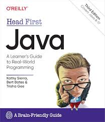
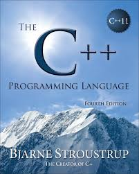
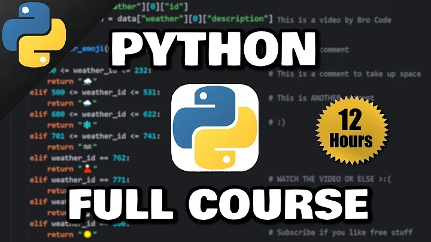
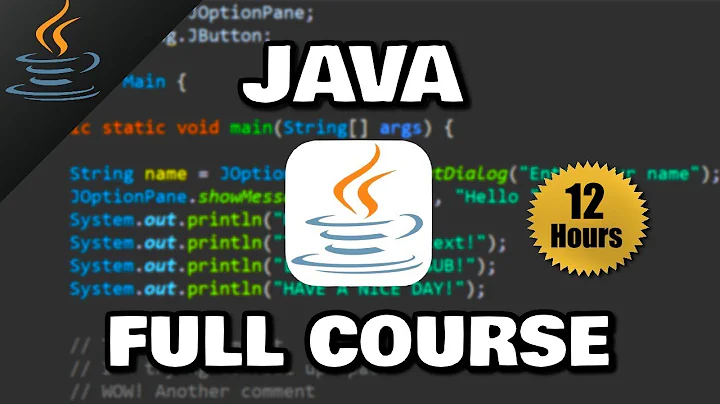

Βιβλία για Γλώσσες Προγραμματισμού
-
Automate the Boring Stuff with Python
Καλύπτει όλα τα βασικά στοιχεία της Python 3, ενώ παράλληλα εξερευνά την πλούσια βιβλιοθήκη της με τις ενότητες για την εκτέλεση συγκεκριμένων εργασιών, όπως η απόσπαση δεδομένων από το διαδίκτυο, η συμπλήρωση φορμών, η μετονομασία αρχείων, η οργάνωση φακέλων, η αποστολή απαντήσεων ηλεκτρονικού ταχυδρομείου και η συγχώνευση, διαίρεση ή κρυπτογράφηση αρχείων PDF.
Al Sweigart
504 σελίδες

Περιεχόμενο Βιβλίου Αξιολόγηση: ★★★★★ (1539 αξιολογήσεις)
-
Head First Java: A Brain-Friendly Guide 3rd Edition
Με αυτό το βιβλίο, θα μάθετε τη γλώσσα Java με μια μοναδική μέθοδο που ξεπερνά τα εγχειρίδια οδηγιών και σας βοηθά να γίνετε ένας σπουδαίος προγραμματιστής. Μέσα από γρίφους, μυστήρια και συνεντεύξεις ψυχολογίας με διάσημα αντικείμενα της Java, θα ενημερωθείτε γρήγορα για τα βασικά στοιχεία της Java και για προχωρημένα θέματα, όπως lambdas, streams, generics, threading, δικτύωση και το φοβερό desktop GUI.
Kathy Sierra, Bert Bates, Trisha Gee
752 σελίδες
 Περιεχόμενο Βιβλίου Αξιολόγηση: ★★★★★ (467 αξιολογήσεις)
-
C++ Programming Language, The 4th Edition
Η γλώσσα προγραμματισμού C++, τέταρτη έκδοση, προσφέρει σχολαστική, πλούσια εξηγημένη και ολοκληρωμένη κάλυψη ολόκληρης της γλώσσας - των διευκολύνσεων, των μηχανισμών αφαίρεσης, των τυποποιημένων βιβλιοθηκών και των βασικών τεχνικών σχεδίασης. Καθ' όλη τη διάρκεια, ο Stroustrup παρουσιάζει συνοπτικά, «καθαρά C++11» παραδείγματα, τα οποία έχουν σχεδιαστεί προσεκτικά για να αποσαφηνίζουν τόσο τη χρήση όσο και τη σχεδίαση προγραμμάτων. Για την προώθηση της βαθύτερης κατανόησης, ο συγγραφέας παρέχει εκτεταμένες διασταυρούμενες παραπομπές, τόσο εντός του βιβλίου όσο και στο πρότυπο ISO.
Bjarne Stroustrup
1376 σελίδες
 Περιεχόμενο Βιβλίου Αξιολόγηση: ★★★★★ (1186 αξιολογήσεις)
Βιντεοσκοπημένες διαλέξεις Γλωσσών Προγραμματισμού
-
Python Full Course for free (2024)
Μια εισαγωγή για αρχάριους στη Python.
Bro Code
720 λεπτά
 Περιεχόμενο Βιντεοδιάλεξης Αξιολόγηση: ★★★★★ (72.261 αξιολογήσεις)
-
Java Full Course for free
Μια εισαγωγή για αρχάριους στη Java.
Bro Code
720 λεπτά
 Περιεχόμενο Βιντεοδιάλεξης Αξιολόγηση: ★★★★★ (480.951 αξιολογήσεις)
-
C++ Full Course for free
Μια εισαγωγή για αρχάριους στη C++
Bro Code
360 λεπτά

Περιεχόμενο Βιντεοδιάλεξης Αξιολόγηση: ★★★★★ (150.807 αξιολογήσεις)